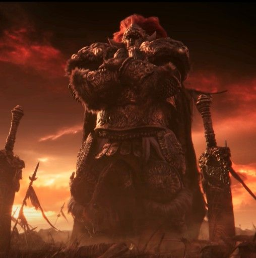

A HISTÓRIA DE UMA LENDA.
Radahn naceu como filho de Radagon, o campeão da tervore e da rainha Renala, a governante da academia de Raya Lukaria.Ele tinha dois irmãos: a princesa Ranni, e Rykard.
Radahn herdou o cabelo vermelho flamejante de seu pai, desde novo ele idolatrava Godfrey, o primeiro elden lord.Ele até esculpiu leões em sua armadura como omenagem .
Radahn depois de crescer, ele foi estudar magia gravitacional em Sellia. Dominar essa magia o permitiu manipularas forças gravitacionais e desafiar as proprias estrelas.
Radahn conquistou as estrelas, usando seus vastos poderes gravitacionais para mantê-las no lugar, assim ganhando o titulode Radahn o Flagelo Estelar.
Apos perder sua Graça Godfrey foi exilado das terras intermédias. Apos o exílio ded Godfrey, Radagon partiu devolta para a capital real leyndell para se tornar o novo
cônjuge da Rainha Marika, a governante das Terras Intermédias. Ele se tornou então o segundo Elden Lord, com Radahn e seus irmãos sendo criados como semideuses por sua
nova madrasta.Marika depois da morte de Godwyn, seu primeiro filho, ficou muito impactada com a situação, a Rainha das Terras Intermedias quebrou o Elden Ring, no grande evento que ficou
conhecido como RupturaCom o Elden Ring destruído, Marika e Radagon foram aprisionados na Térvore, e a Ruptura levou a guerra entre os descendentes semideuses, cada um buscando se tornar o novo Elden Lord.
Radahn lederou seu exército contra as forças dos outros semideuses, até que apenas ele e sua meia-irmã ficaram de pé.
Malenia (meia-irmã de Radahn) foi ao encontro de seu meio-irmão pelo pedido de Miquela seu irmão, que via em Radahn a força nessesaria para completar seu objetivo de virar o novoElden Lord e criar um mundo pacifíco.
Malenia chega com seu exército aonde Radahn e seu exército estavam, Malenia chega com uma mensagem de Miquela o comvocando para ele se tornar o consort dele e o ajudar em seu plano,
Radahn rapidamente recusou a oferta já que ele era um general que amava as batalhas então ajudar a criar um mundo pacifico não seria algo que ele iria querer. Malenia não poderia sair de mãos vazias entãoela partiu
para a batalha contra Radahn. A batalha não foi nada façil para a Malenia e seu exército que estavam perdendo para o exército de Radahn, então Malenia como ultimo recurso ela deixa que sua 'maldição' a dominasse,
fazendo ela explodir em podridão escarlate em cima de Radhan. Esse ataque foi capas de mudar a fauna e flora de uma região interira das Terras Intermedias,Caelid.
Mesmo Radahn recebendo esse ataque devastador a queima ropa ele sobreviveu, mas com sequelas da podridão escarlate que destruirão sua mente e o deixaram em um estado bestial, ele atacava tudo e todos que via pelo caminho.
Já Malenia ficou desacordada por um longo tempo, ela foi carregada até a Arvore Sacra (lugar aonde Miquela residi) por uma integrante de seu exército que avia sobrevivido a batalha.
A batalha pode ser considerada um empate já que os dois sairam gravimente feridos.
Depois da batalha Radahn continuou nas dunas que deram pauco a sua batalha com Malenia. Depois de um tempo um companheiro de Radahn que não participou desta luta criou o Festival do Radahn, este festival tinha o objetivo de reunir
guereiros fortes o suficientes para matarem Radahn e o livrarem de sua tortura causada pela podridão
 Mesmo Radahn recebendo esse ataque devastador a queima ropa ele sobreviveu, mas com sequelas da podridão escarlate que destruirão sua mente e o deixaram em um estado bestial, ele atacava tudo e todos que via pelo caminho.
Já Malenia ficou desacordada por um longo tempo, ela foi carregada até a Arvore Sacra (lugar aonde Miquela residi) por uma integrante de seu exército que avia sobrevivido a batalha.
A batalha pode ser considerada um empate já que os dois sairam gravimente feridos.
Depois da batalha Radahn continuou nas dunas que deram pauco a sua batalha com Malenia. Depois de um tempo um companheiro de Radahn que não participou desta luta criou o Festival do Radahn, este festival tinha o objetivo de reunir
guereiros fortes o suficientes para matarem Radahn e o livrarem de sua tortura causada pela podridão
Mesmo Radahn recebendo esse ataque devastador a queima ropa ele sobreviveu, mas com sequelas da podridão escarlate que destruirão sua mente e o deixaram em um estado bestial, ele atacava tudo e todos que via pelo caminho.
Já Malenia ficou desacordada por um longo tempo, ela foi carregada até a Arvore Sacra (lugar aonde Miquela residi) por uma integrante de seu exército que avia sobrevivido a batalha.
A batalha pode ser considerada um empate já que os dois sairam gravimente feridos.
Depois da batalha Radahn continuou nas dunas que deram pauco a sua batalha com Malenia. Depois de um tempo um companheiro de Radahn que não participou desta luta criou o Festival do Radahn, este festival tinha o objetivo de reunir
guereiros fortes o suficientes para matarem Radahn e o livrarem de sua tortura causada pela podridão